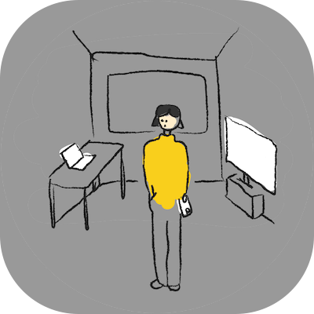
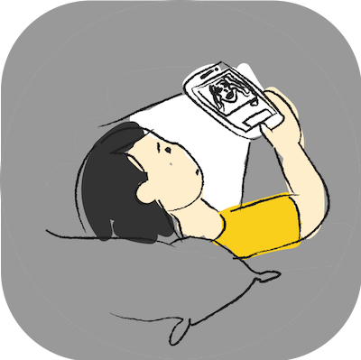
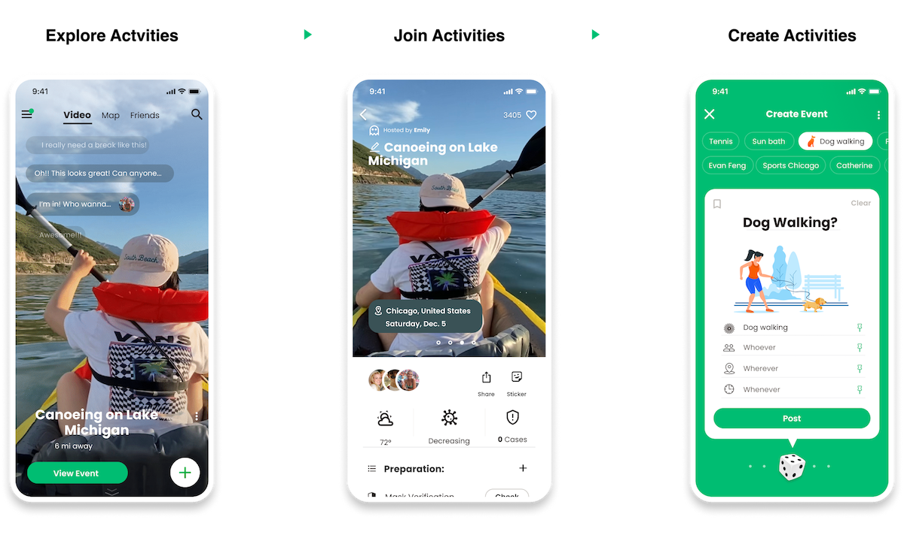
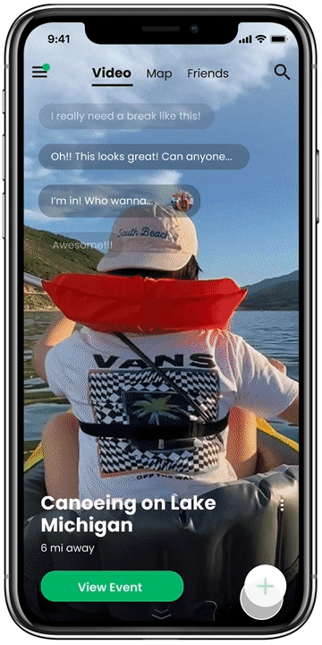

N
E
X
T
→
Let's enjoy the outdoors!
Introduction
The pandemic has limited people’s activities and also has led small
businesses to struggle. Interestingly, it also has motivated people
to make the most of outdoor spaces.
Outdoor spaces mean refreshing and low risk of spreading the virus
in the current situation, but how can we bring another layer of
dynamics to it?
Team
Siwei Sun
Yuqing He
Yuanyuan Hu
Pandemic has trapped people in their bubble.
16 hours in front of a screen

Nothing new in this tiny room

Happiness seems so far away
There are great dynamics outdoor.
How might we provide a better outdoor experience by facilitating
interactions and events?
We will introduce an interesting and immersive way of finding activities
and meeting people around you.

Scenario 1
Have you ever felt that you just need more motivation? All the reasons
that you need to go are here.
üôÖ‚Äç‚ôÄÔ∏è
- No idea about what the event looks like
- No people to go width
- No time to waste on the way

üòé
- What you see is what you get
- Nearby activities by category
- Follow people's paths and make friends
Previous Navigation
Simplified Navigation
Scenario 2
Have you ever got tired of all the back-and-forth & logistics? Better
collaboration makes it no longer an obstacle.
üôÖ‚Äç‚ôÄÔ∏è
- Don't want unnecessary steps
- Don't want to take a risk

üòé
- Real-time data before you go
- A mutual assistance community for preparation
- Consensus in safe distance
Scenario 3
Have you ever failed to find what you can do? There are far more
things that you have never thought about.
üôÖ‚Äç‚ôÄÔ∏è
- Don't have a chance to try new things
- Not good at making decisions

üòé
- All ingredients at one glance
- Post your idea and get people to join